Cada mundo en su llegada, a 1280 x 720. Izquierda antes de F14, derecha después: gradación por mundo, rayos de luz tramados, niebla baja con el color del mundo, brillo que se derrama hacia lo oscuro y la luz que pinta a los personajes. PLAN.md F14 tiene el detalle.
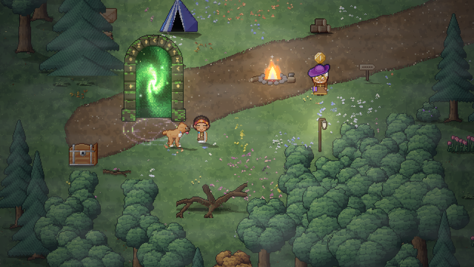
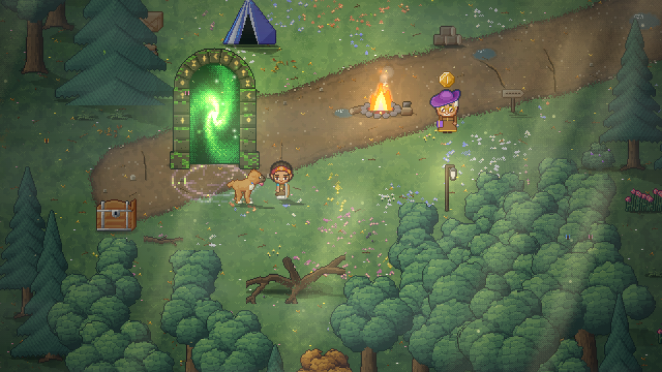
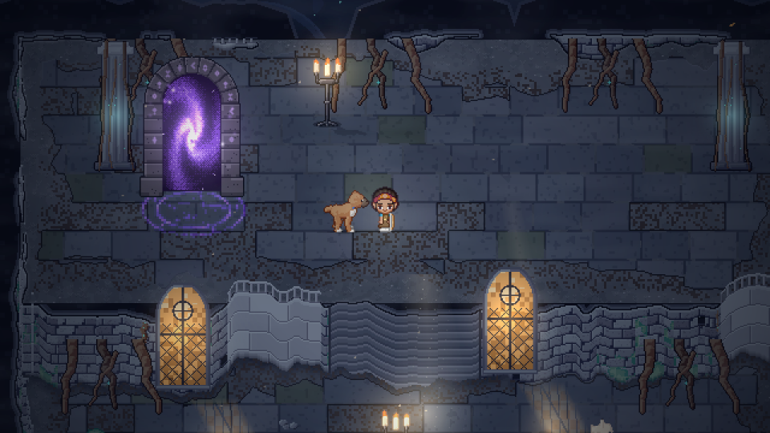
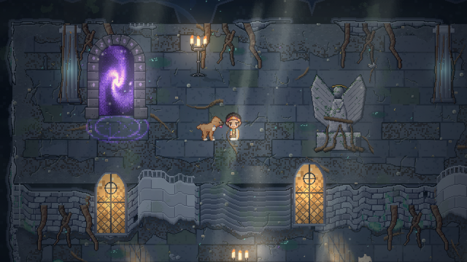
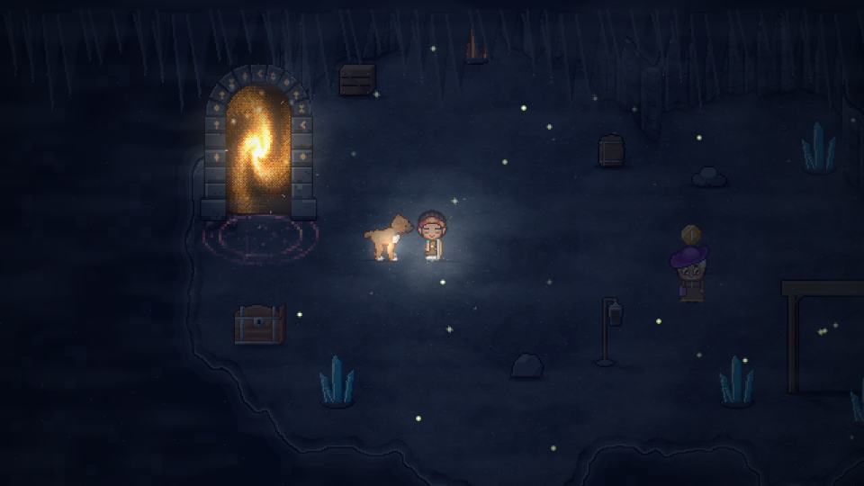
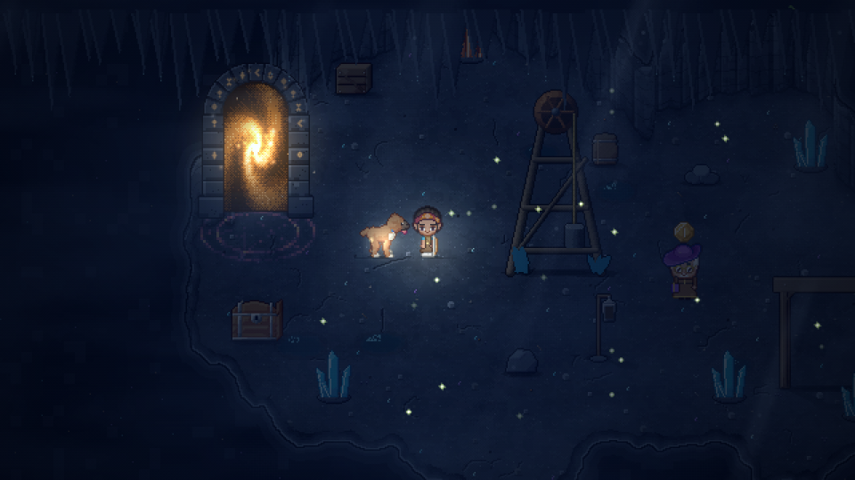
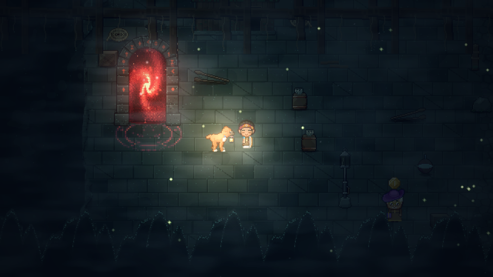
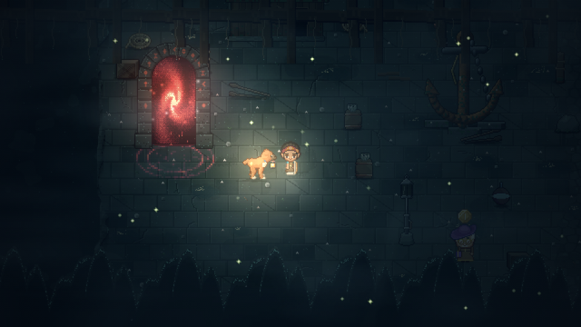
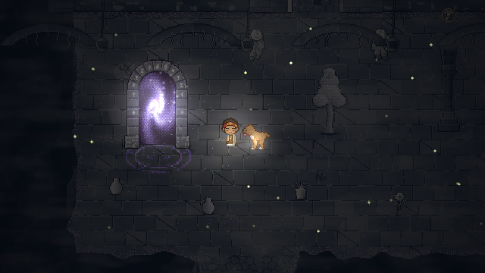
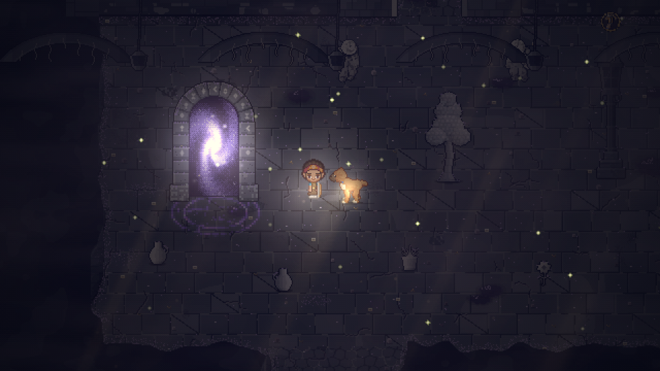
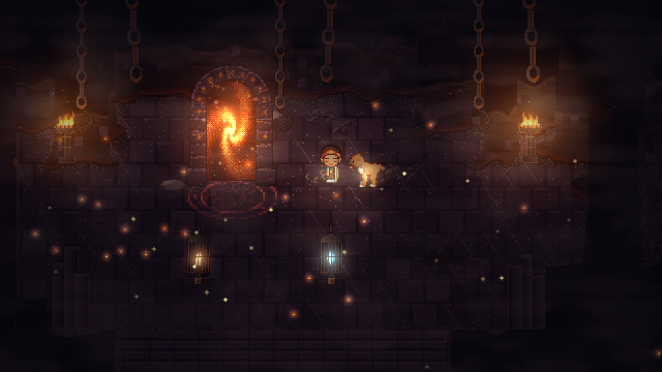
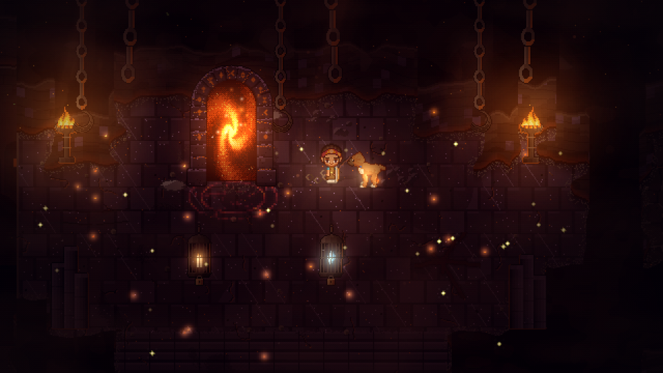
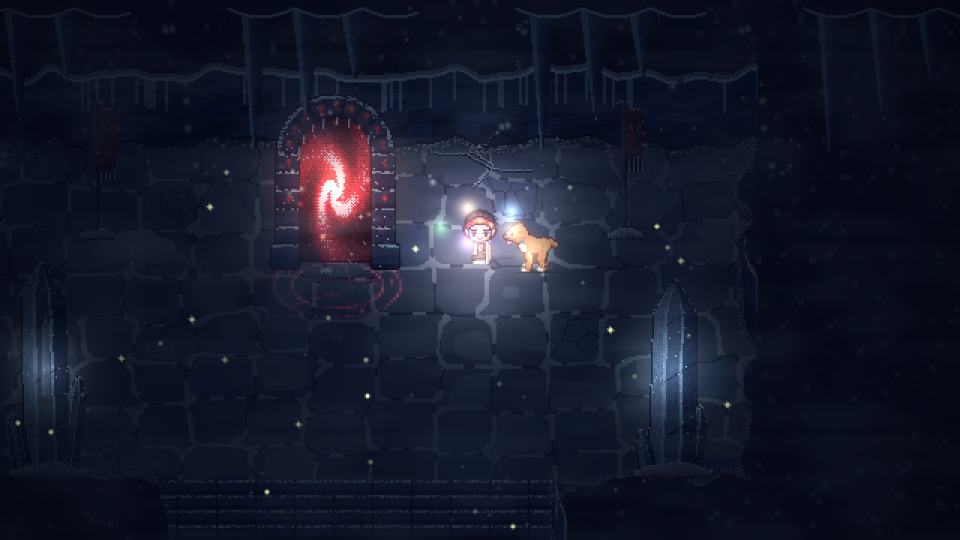
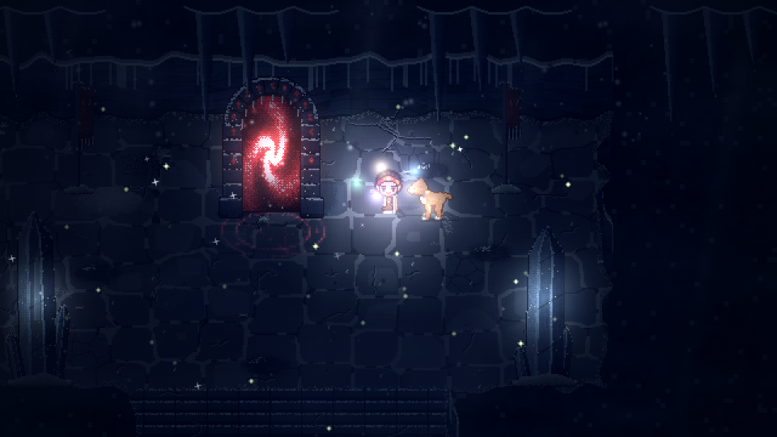
| Cambio | Qué aporta |
|---|---|
| Gradación por mundo y zona | Cada piso tiene su paleta: negros con color, luces con tinte. Se reconoce un mundo por su luz. |
| Rayos de luz tramados | Profundidad y aire. Están anclados al mundo, pixel perfecto, y se apagan en lo oscuro. |
| Niebla baja y niebla con color | Una capa delante de todo que corre más rápido: se siente la distancia. |
| Brillo y tramado | Fuego, cristales y portales brillan hacia afuera sin quemar a la heroína. El tramado 4 x 4 quita las bandas de los degradados. |
| La luz pinta a los personajes | Junto a la fogata se ponen tibios, junto a un cristal fríos. Están dentro de la escena, no pegados encima. |
| Luciérnagas que alumbran, polvo en la luz | En los pisos oscuros cada luciérnaga deja su puntito de luz. El polvo se ve donde le pega la luz. |
| Primer plano del jefe | En la entrada, el enojo y la muerte la cámara corta a un zoom entero más, como en el cine. |
| Pisos repintados y un monumento por zona (taller) | 69 monumentos con su historia y pisos con desgaste, grietas, raíces y charcos. Cada zona se reconoce de lejos. |
| Especies nuevas (taller) | Dos por mundo, que huyen o se esconden al acercarse. |
| Cámara de la compu | 720 p, 1080 p y 1440 p ven el mundo a 360 de alto. La tablet sigue en 410 para que el inventario quepa. |